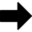
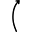
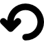

THE SHOT LAB
The Head/Foot toggle selects which end you shoot from; Head is the default. The full court keeps Head and Foot in fixed positions. Switching ends keeps existing live biscuits in their physical positions, moves the collection area behind the receiving kitchen, and clears the old aim target. The scoring-end view follows the receiving end, with the black and yellow sides swapping when you change shooting ends. Choose a setup after switching to arrange it at that end. Undo restores the last shot’s starting state, including its shooting end.
Choose a setup, tap the scoring end to set direction and launch speed for a target, then shoot or fine-tune the controls. Drag the top biscuit from the alternating supply column into a magnified court view, or select it and tap to place it. A valid drop advances the shooter. Each color has four biscuits in total across the court, collection area, queued shooter, and supply. Drag stationary biscuits in magnified views to rearrange them. Dropping one off court returns it to supply; overlapping placements are cancelled. A magnified court click sets both direction and speed using current slickness and drift for an unobstructed shot; collisions can change its destination. Choose one of the four labeled yellow/black St. Pete and Tampa setup buttons. Starting positions keep the biscuit clear of both the angled outside border and the angled center separator. Aim angles are relative to straight down the court.
Switch colors to shoot from either side at the head. Starting position moves from the inside to outside of that color’s starting area. Each color can use four biscuits, including those collected behind the kitchen; the queued shooter counts toward that limit. Practice mode does not enforce turns or a full match. Drag the queued biscuit within its starting area in shooting-end view to change its starting position. Choose Yellow or Black in the header to change the queued color. Moving the starting position preserves a selected target and recalculates direction and speed. The full-court overview only moves the focus window.
Shared accuracy starts at 95.0%, court slickness at 50, and sideways drift at None, shooting from Head with yellow queued first. Focus and shooting-end views remain visible together.
The shared aim and speed accuracy ranges from 0.0% to 100.0%. Aim has additive Gaussian (bell-curve) angular error: most shots are near the intended angle, with occasional larger errors. Its standard deviation is 6° × (1 − base accuracy / 100), independent of the chosen aim angle. Thus even a 0° aim varies below 100% accuracy. This skill scale is an illustrative simulator choice, not a measured player rating or hit percentage.
With Fast shot inaccuracy enabled, shots above the configured threshold add angular variance. The default threshold is 8 ft/s. At the default threshold, 18 ft/s with 100% base aim accuracy, exact speed, no drift, and an unobstructed path, half of the shots miss a virtual six-inch target biscuit centered on the intended aim line at the selected range. A hit means the moving biscuit makes contact, allowing its centerline to pass within six inches of the target center. Lower base accuracy increases the miss rate. Above 18 ft/s the speed penalty keeps increasing. With no selected target, the reference range is the receiving 8s. This estimated miss rate is not a scoring probability.
Independent skill and speed variances are added. The speed component is zero through 8 ft/s, then grows linearly with speed, calibrated using the Gaussian central-50% quantile. It uses the actual sampled launch speed. The Gaussian model and speed–accuracy principle are research-informed; the 8/18 ft/s thresholds, six-inch reference target, and calibration are simulator design choices rather than validated shuffleboard measurements.
Speed accuracy retains uniform percentage variation: 90% at 6 ft/s gives 5.4–6.6 ft/s. Starting position remains exact. Predictions use nominal settings; errors are sampled only on Shoot. Undo restores the last shot’s starting state. Replay restores that state and shoots with fresh accuracy errors.
Research: Zhang, Daw & Maloney (2015), motor-error distributions; Zhang et al. (2013), Gaussian motor uncertainty; Harris & Wolpert (1998), signal-dependent noise and speed–accuracy trade-offs.
Six-inch discs on a 39 × 6 ft playing area with 9 ft scoring triangles and 18 in kitchens. Numbers are shown as learning aids. Discs must fit completely inside a scoring cell without touching its ¾ in border to score. The kitchen separator does not invalidate a −10.
Constant sliding friction slows each disc. Slickness maps to a deceleration of 1.47–0.12 ft/s². Optional uniform sideways acceleration approximates drift. Collisions use equal masses and a restitution coefficient of 0.94. These are illustrative parameters, not measurements from the books or a calibrated court.
Biscuits may overhang the court edges and remain in play until completely beyond an edge. The kitchen has angled outside borders. Biscuits fully past an edge are collected behind the far kitchen and still count as used. Short biscuits are also collected when the shot settles. Collected biscuits score zero and do not collide with live biscuits; they can be dragged back onto the court. No cushion rebounds, spin, local surface irregularities, or cue delivery are modeled. Undo restores the previous arrangement and settings; Redo restores the undone outcome. The queued color switches after a shot settles; Undo restores the previous shooter and settings.
The Clearwater Shuffleboard Club reference library supplies the practice concepts. These notes are original summaries; the books are not reproduced here.
Glen Peltier’s Shuffleboard Strategy is listed for purchase, with no downloadable text on the library page. It was unavailable for review. Source scans contain diagrams and imperfect OCR; this app is a simplified teaching model.